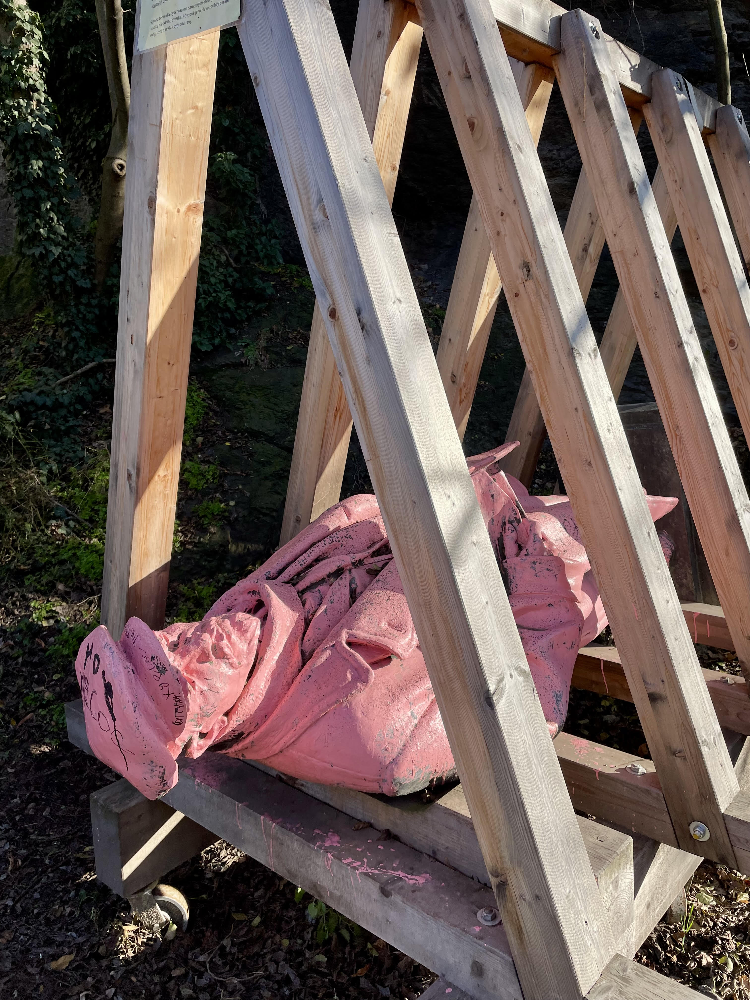

My family is Czech. My parents met organizing university students during the Velvet Revolution. My grandfather is an architect with a great admiration for art and an eye for detail — he helped design a building neighboring the one where, at seventeen, he was detained and tortured by the StB secret police. There is still a tablecloth at my grandmother's that has outlasted several regimes. This is the kind of context I grew up inside — a history that doesn't announce itself, that lives in objects and stories and a particular dark humor about the absurdity of being alive.

I grew up between countries, between languages, in the space that doesn't have a name because it doesn't belong to any single place. For a long time that felt like grief. You are the foreign kid everywhere you go, the blank one, the one who arrived mid-sentence into someone else's story. What I had, before I had words for any of it, was art. I could pick up a pencil in any country and the language was the same. I spent a Halloween party carving a detailed elephant into a pumpkin while the other kids played. I didn't notice the party. I wasn't being antisocial — I just had somewhere to be.
I think art, at its most honest, lives before language. Not instead of it — but underneath it, in the place where an idea still has weight and shape before we agree on what to call it. We named the cat. We named the colour. We named grief. These are useful, necessary things. But underneath the name, the cat is still doing whatever it was doing, and I find that more interesting. I grew up moving between enough worlds to understand that most of what feels fixed is just local agreement. That underneath the agreements, life keeps going — mysterious, stubborn, not particularly interested in our categories.
So I make art from that space. With presence rather than plan, the way you approach something you don't want to startle. The figure appears often in the work — because people genuinely puzzle me, the decisions we make, the brief specific lives we lead inside these bodies. The figure is just a moment in time. We could all be that body. I am drawn to artists who hold wit and weight in the same hand — who can be critical without losing beauty, who find the metaphor that arrives somewhere true without announcing it was coming. Lawrence Paul Yuxweluptun paints like he's both laughing and keeping score. That's the register I aspire to. Not to say the thing directly, but to leave enough room for it to find you.
I make art because it brings me pure joy, and because it is the closest thing I have to meaning.